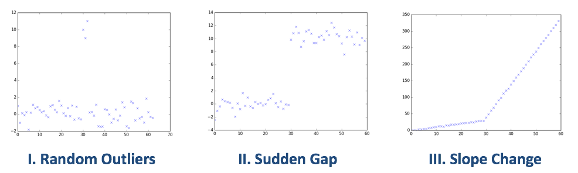
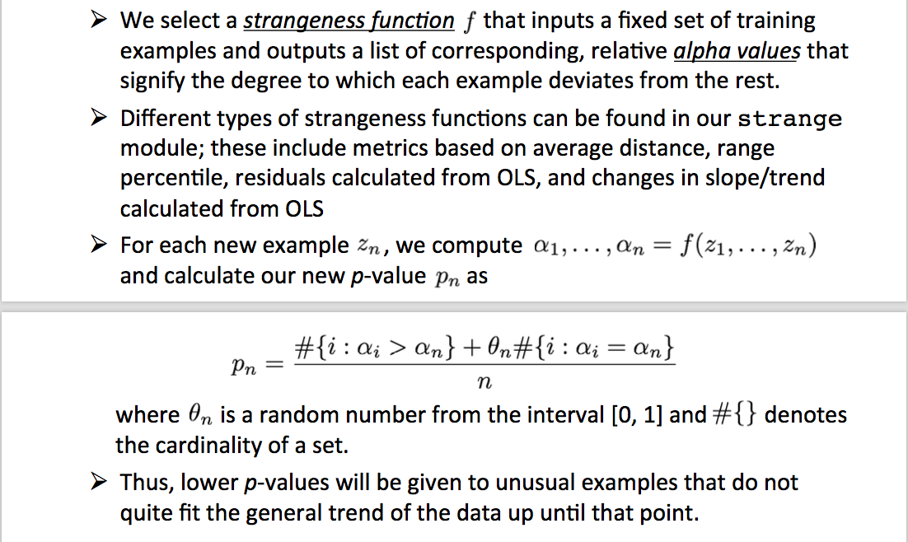
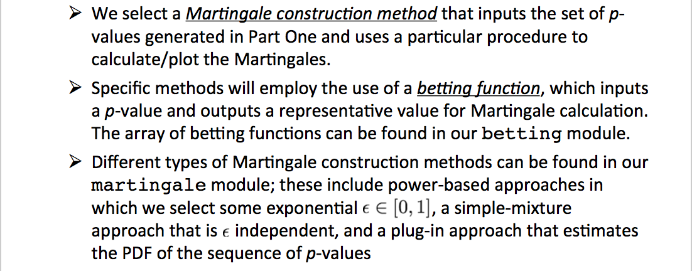
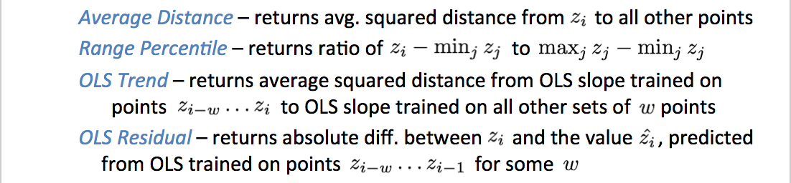

Loading...
Given a sequence of random variables, we wish to develop a method for determining the existence of anomalies.
Specifically, as the variables arrive one by one, we test the exchangeability assumption for the sequence, which states that the joint distribution for these variables is invariant under any permutation of the indices. One method for anomaly detection involves using a Martingale, a sequence of random variables such that the expectation of a variable is equal to the value of the variable at the last point in time. In particular, the martingale here models the degree to which the data violates the null hypothesis given by the exchangeability assumption.
Our study focuses on three general types of anomalies.
We construct various datasets with these three structures to evaluate the efficacy of our methods. We also examine real-life time series datasets from Twitter giving counts for the number of Tweet mentions of large, publicly-trade companies (e.g. AAPL, AMZN, CVS, FB) over five-minute intervals.
Here is our generalized, two-step procedure for analyzing a dataset, constructing Martingales, and detecting anomalies. We wrap all of our methods in an AnomalyDetector class, whose objects can be instantiated with two main customizable options – (1) a strangeness function and (2) a Martingale construction method.
Importing the training examples one by one and generating a list of corresponding p-values.
Constructing a Martingale from the sequence of p-values
This general algorithm was first introduced by Vovk et al. in [1]. In this project, we add our own customizations to answer the specific questions we posed.
We compare the relative efficacy of different strangeness functions for Part One of the algorithm in generating Martingales.
Here are the four different strangeness functions we examine. Note that they all performed well on non-anomalous Norm(0, 1) data, returning very low Martingale values.
